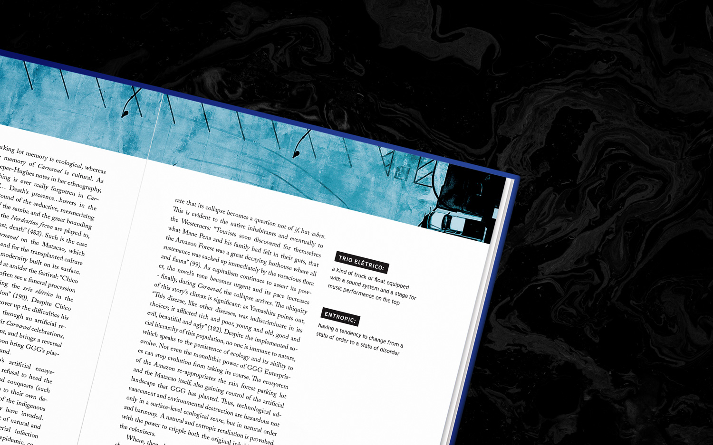
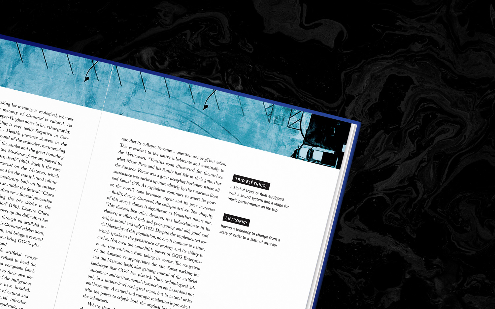

Occam's Razor is Western Washington University’s annual academic journal.
OR’s mission is to bring excellent undergraduate writing to a broad audience. I spent two years designing for Occam’s Razor, ultimately leading a team of four designers to create the 2017-18 print layout and branding. Our goal was to showcase academic papers in a professional, attentive, and minimal way, celebrating hours of research and editing that would otherwise go unseen.

 
